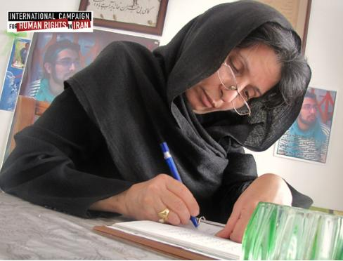
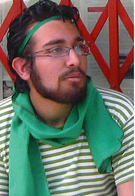

|
|
مادرسهراب اعرابی : از خون پسرم به شرط آزادی زندانیان سیاسی می گذرم
جمعه14 خرداد 1389
آمنه فهیمی مادر سهراب اعرابی از کشته شدگان پس از انتخابات سال گذشته به "کمپین بین المللی حقوق بشر در ایران" گفت که از خون پسرش به شرط آزادی زندانیان سیاسی می گذرد.
آمنه خاتون (پروین) فهیمی مادر سهراب اعرابی از کشته شدگان پس از انتخابات سال گذشته با اشاره ضمنی به تهدیدمقامات امنیتی برای عدم برگزاری مراسم سالگرد برای پسرش گفت: « غم از دست دادن سهراب و سهراب ها غمی جانکاه و فراموش نشدنی است از همه ی جوانانی که شجاعانه ایستاده اند تا نام سهراب ها در غبار زمان از بین نرود صمیمانه تشکر می کنم و در حالی که ماموران امنیتی به در خانه ی من مراجعه کردند و گفته اند مبادا اغفال شوم و در سالروز شهادت فرزند نازنینم از منزل بیرون بیایم و سخنرانی کنم به ان ها می گویم من از خون پسرم تنها به شرط آزادی بی قید وشرط زندانیان سیاسی می گذرم. »

وی افزود که «سهراب را به جرم صلح طلبی عشق و ازادی از دست دادم بگذارید فرزندان دیگر این سرزمین زنده بمانند و زندگی کنند.» خانم فهیمی در ادامه شعری را به همین مناسبت اضافه کرد:
«ارغوانم ارغوانم !لاله ام در غمت خون می چکد از ناله ام
هر کجا مشتی گره شد مشت من زخمی هر تازیانه پشت من
هر کجا فریاد آزادی منم من درین فریادها دم می زنم »
کمپین بین المللی حقوق بشر در ایران همچنین اطلاع حاصل کرده که طی هفته های گذشته خانواده برخی از کشته شدگان بعد از انتخابات تهدیدشده اند که مراسم عمومی سالگرد برای عزیزان از دست رفته شان برگزار نکنند.

سابقه خبر:
مادر سهراب اعرابی ۱۹ ساله ۲۶ روز سرگردان بود در حالی که ظاهرا سهراب در اثر تیراندازی درراهپیمایی روز ۲۵ خرداد ماه کشته شده بود اما مرگ او در روز ۲۰ تیرماه اعلام شد. مادر سهراب در نوشته ای که رسما منتشر شده اشاره کرده است که چگونه او هر روز به زندان اوین و دادگاه ها سر می زده و تلاش می کرده تا اطلاعاتی در باره پسرش که ناپدید شده بود پیدا کند و حتی این جریان به جایی رسیده بود که او باور کرده بود که سهراب در بازداشت بسر می برد.